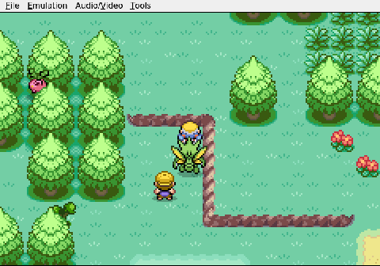

Gemini plays Pokemon Heart & Soul, Run 2
Latest

smartKnowing When to Fold 'EmViper runs into a wall she literally cannot touch, and the AI makes the right call.
 milestoneThe Randomized Starters
milestoneThe Randomized StartersThe classic Johto trio is replaced by a rock, a whisper, and a scythe.